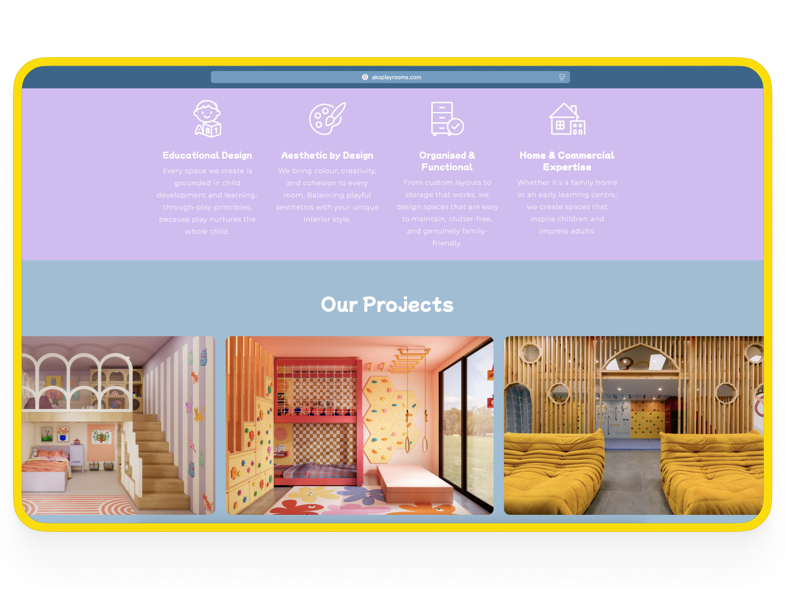

Project Overview
Ako Playrooms are a New Zealand–based studio designing inspiring children's play spaces for homes and businesses. They approached Chaotic Good Creations looking for a website that could better reflect their brand, attract new design clients, and launch their new e-commerce offering.
Their previous site, built on Squarespace, wasn't structured to drive enquiries or handle online sales. Together we planned a full redesign that balanced storytelling, functionality, and conversion.
